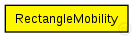
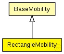

This documentation is released under the Creative Commons license
This documentation is released under the Creative Commons licenseC++ definition: click here
Moves the node around a rectangle.
See also: ConnectionManager
Author: Andras Varga
The following diagram shows usage relationships between types. Unresolved types are missing from the diagram. Click here to see the full picture.
The following diagram shows inheritance relationships for this type. Unresolved types are missing from the diagram. Click here to see the full picture.
| BaseMobility (simple module) |
Module which is responsible for mobility related information like position and movement BaseMobility itself defines a static mobility pattern (means only a position, no movement). Mobility modules which extend from this module willd efien more complex movement patterns. |
| Name | Type | Default value | Description |
|---|---|---|---|
| notAffectedByHostState | bool | true | |
| coreDebug | bool |
debug switch for the core framework |
|
| x | double |
x coordinate of the nodes' position (-1 = random) |
|
| y | double |
y coordinate of the nodes' position (-1 = random) |
|
| z | double |
z coordinate of the nodes' position (-1 = random) |
|
| debug | bool |
debug switch |
|
| x1 | double |
rectangle is denoted by the (x1,y1) and (x2,y2) coords [m] |
|
| y1 | double |
rectangle is denoted by the (x1,y1) and (x2,y2) coords [m] |
|
| x2 | double |
rectangle is denoted by the (x1,y1) and (x2,y2) coords [m] |
|
| y2 | double |
rectangle is denoted by the (x1,y1) and (x2,y2) coords [m] |
|
| startPos | double |
in range [0.0,4.0): topleft=0, topright=1, bottomright=2, bottomleft=3 |
|
| speed | double |
speed of the host (in m/s) |
|
| updateInterval | double |
time interval to update the hosts position (in seconds) |
| Name | Value | Description |
|---|---|---|
| class | RectangleMobility |
// // Moves the node around a rectangle. // // @see ConnectionManager // @author Andras Varga // simple RectangleMobility extends BaseMobility { parameters: @class(RectangleMobility); bool debug; // debug switch double x1 @unit(m); // rectangle is denoted by the (x1,y1) and (x2,y2) coords [m] double y1 @unit(m); // rectangle is denoted by the (x1,y1) and (x2,y2) coords [m] double x2 @unit(m); // rectangle is denoted by the (x1,y1) and (x2,y2) coords [m] double y2 @unit(m); // rectangle is denoted by the (x1,y1) and (x2,y2) coords [m] double startPos; // in range [0.0,4.0): topleft=0, topright=1, bottomright=2, bottomleft=3 double speed @unit(mps); // speed of the host (in m/s) double updateInterval @unit(s); // time interval to update the hosts position (in seconds) }
This documentation is released under the Creative Commons license